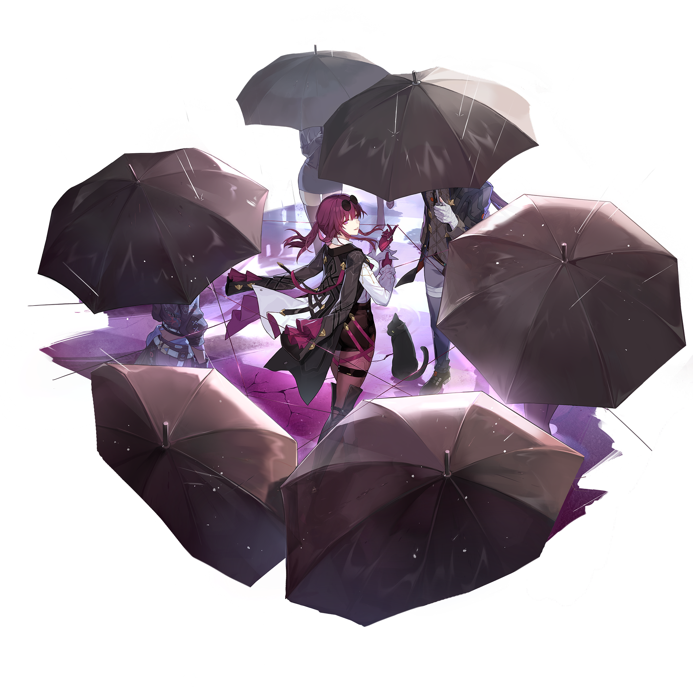

Путеводитель по звёздному экспрессу
Вики
Обучение
Данные
Учебная база по героям, конусам и реликвиям.
Этот проект помогает быстро ориентироваться в героях, путях, элементам и наборах артефактов в Honkai: Star Rail. Здесь собраны полезные карточки, фильтры и инструменты для учебного разбора и планирования команды.
